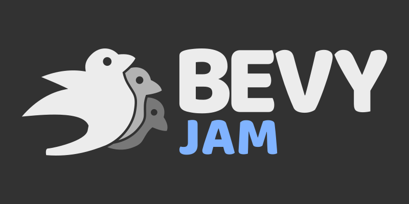
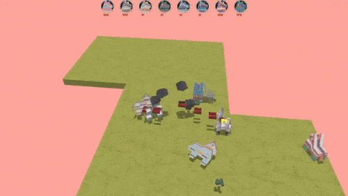
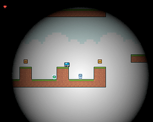
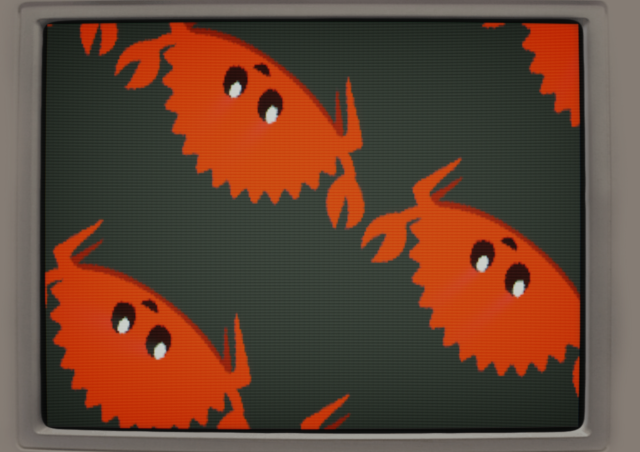

This Month in Rust GameDev #32 - March 2022
Welcome to the 32nd issue of the Rust GameDev Workgroup's monthly newsletter. Rust is a systems language pursuing the trifecta: safety, concurrency, and speed. These goals are well-aligned with game development. We hope to build an inviting ecosystem for anyone wishing to use Rust in their development process! Want to get involved? Join the Rust GameDev working group!
You can follow the newsletter creation process by watching the coordination issues. Want something mentioned in the next newsletter? Send us a pull request. Feel free to send PRs about your own projects!
- Rust GameDev Podcast
- Rust GameDev Meetup
- Game Updates
- Learning Material Updates
- Engine Updates
- Tooling Updates
- Library Updates
- Other News
- Requests for Contribution
- Jobs
Rust GameDev Podcast

The Rust Gamedev Podcast features interviews with indie game developers creating titles with the Rust programming language. It covers technical topics as well as the business of open source and commercial indie games development.
In March, two episodes were released:
The seventh episode is a chat with Erlend and Ole about Fish Fight, open source games development, and future game spin-offs.
In the eighth episode, Forest chats to Dustin about A/B Street.
Listen and Subscribe from the following platforms: Rust GameDev Podcast (simplecast), Apple Podcasts, Spotify, RSS Feed, or Google Podcasts.
Rust GameDev Meetup

The 14th Rust Gamedev Meetup took place in March. You can watch the recording of the meetup here on Youtube. The meetups take place on the second Saturday every month via the Rust Gamedev Discord server and are also streamed on Twitch.
Game Updates
Bevy Jam

Voting on the first-ever Bevy Jam just finished! It was a week-long event, where the goal was to make a game in Bevy Engine, the free and open-source game engine built in Rust. The theme was 'Unfair Advantage'.
The full results can be found on itch.io, and you can read an exploration of the entries to find out about how these entries used different asset formats, crates, and Bevy features.
Here are the top five games:
🥇 First Place: Petty Party
Petty Party is a Mario Party inspired board game, in which you play against the world's worst opponent, who's actively rigging the game against you.
The game was originally very hard to beat, so the devs balanced the jam release fairly heavily in the player's favour - however, if you beat the game, you can unlock the original difficulty as a 'hard mode'!
The source for the game is available on GitHub.
🥈 Second Place: ¿Quién es el MechaBurro?

¿Quién es el MechaBurro? is a singleplayer/local multiplayer game (up to 4 players) with bots (8 total burros) inspired by twin-stick shooters and aspects of Mario Kart. Players choose to play as one of the burro piñatas and then attempt to be the last burro standing in each level of the game. At the start of each round, one burro is chosen randomly to be upgraded to the Mechaburro, giving them an unfair advantage.
A postmortem devlog detailing the process of making the game during the jam can be found here, a trailer for the game is viewable on YouTube and the source code for the game is available on Github.
🥉 Third Place: Chaz

Chaz is a platform racing game, where you have to stay close to your opponent in order to see where you're going. Beat them to the floating heart to win - but be warned, once you do, they'll steal your moves!
The source code is available on GitHub.
Fourth Place: Warlock's Gambit
Warlock's Gambit is a puzzle game constructed like a card game, playable in the browser. You are given a static deck and have to play your cards carefully to beat your opponent. In keeping with the theme of the jam, the decks are stacked against you. In fact, it's impossible to win by default. But you have a trick up your sleeve, literally. You can drag a card in your sleeve to play it later.
The jam release was limited and confusing, but a post-jam update fixed the most annoying bugs, clarified the game rules, enabled importing custom decks, and added great code documentation (including a flow diagram demonstrating the game state changes).
The game code is licensed under MIT or Apache-2 and is available on Github.
Fifth Place: Cheaters Never Win

Cheaters Never Win is an unfairly difficult infinite runner set in a cyberpunk world.
Collect keycaps in order to unlock cheat codes, which will give you access to forbidden powers - like jumping, and moving left!
Since the jam, the team has begun work on a full release for the game.
The source for this game is available on GitHub.
V-Racer
 Screenshot of V-Racer
Screenshot of V-Racer
V-Racer (GitHub) by @Syn-Nine is a retro drift racing game inspired by Atari Battlezone and Wipeout, created using Syn9's Rust Mini Game Framework. The game is part of an open source repository of several mini-games that use this framework.
Harvest Hero Origins - Spring Fever

Harvest Hero Origins by Gemdrop Games is an Arcade Wave Defense game featuring a co-op survival mode.
Gemdrop Games collaborated with Pixadome to bring their featured character Blue from Chenso Club to the survival roster. Please go wishlist Chenso Club to support the developers!
Blue is an android who wields a chainsaw to rip and tear through her enemies. Slice and dice, then ride through enemies in the new Spring Fever expansion!
Veloren
Veloren on the Steam Deck!
Veloren is an open world, open-source voxel RPG inspired by Dwarf Fortress and Cube World.
In March, Veloren was tested on the SteamDeck, which you can read about in detail in the weekly devblog. Lots of work was done with Airshipper, Veloren's launcher, including some bug fixes, but mainly the switch to Github Releases as the download backend. This will make game updates significantly faster and more reliable for players. Work is also being done to make use of Github's HTTP range requests to do partial patches where possible. Audio work was done to improve swimming sounds playing unevenly, and more sounds to gliding.
Veloren was also mentioned on Hacker News, and lots of great discussions happened in the comment section. In 2021, Veloren spoke at Rust in Arts, and the recording has recently been posted. The 0.13 release map is in the works, with a jungle theme. CliffTowns are being developed, as a new town located in the mountains. Veloren recorded another reading club episode, this time about Tracy and optimizations. A new series was also started, and the first Veloren Code Review was recorded.
March's full weekly devlogs: "This Week In Veloren...": #162, #163, #164, #165.
rust-nonogram

Nonograms (AKA Picross) are logic puzzles that involve filling in cells on a grid. The goal of rust-nonogram is to be a quick and engaging time-killer. Featuring random puzzles and simple controls, it is a great way to have some fun and test your skills.
Terrain Generator

"Terrain Generator" is a website made by @kettlecorn that generates procedural island landscapes. It uses WebAssembly SIMD and multithreading via WebWorkers to speed up generation.
The terrain is generated with multi-octave simplex noise using the new
simplex-noise crate clatter.
Terrain Generator's code is open-sourced on GitHub.
Way of Rhea
Way of Rhea is a puzzle adventure with hard puzzles and forgiving mechanics being produced by @masonremaley in a custom Rust engine. It has a demo available on Steam.
Latest developments:
- A new demo was pushed to Steam for PAX East
- The mushroom biome art was completed
- All puzzles for the main game are complete
- More secrets have been added
- Four out of the five characters are now in the game
SDL_mixerwas replaced with a custom Rust mixer built on top of libsoundio- Numerous minor bug fixes and quality of life improvements, you can find more details here
{kind=link}
{kind=link}
You can stay up to date with the latest Way of Rhea developments by following it on Steam, signing up for their mailing list, or joining their Discord.
Engine Updates
godot-rust

godot-rust (GitHub, Discord, Twitter) is a Rust library that provides bindings for the Godot game engine.
We are pleased to announce the release of godot-rust version 0.10.0. This update brings many new quality-of-life features, such as basic async and serde support, more flexible exporting of Rust symbols to Godot, better CI and doc integration, among many more features that have previously been exclusive to the GitHub repo.
This release also makes the API much more user-friendly than previous versions with more consistent naming, flatter module structure and fewer redundancies.
Thank you to all of the contributors who made this possible!
A full list of the changes is available in the changelog.
Notan v0.2.1
Notan is a simple and portable layer designed to create your own multimedia apps on top of it without worrying about platform-specific code.
The main goal is to provide a set of APIs and tools that can be used to create your project in an ergonomic manner without enforcing any structure or pattern, always trying to stay out of your way. The idea is that you can use it as a foundation layer or backend for your next app, game engine, or game.
Version v0.2.1 improves and adds features focusing on the creation of apps, like select mouse cursor or lazy loop among other things. The main focus was to improve the integration with egui supporting all its features.
Tetra 0.7
Tetra is a simple 2D game framework, inspired by XNA, Love2D, and Raylib. This month, Tetra 0.7 was released, featuring:
- Support for a wider variety of texture formats
- A more powerful API for blending
- Lots of bug fixes, cleanups, and improvements
For more details, see the changelog.
As mentioned in previous newsletters, this is likely to be the final release of Tetra, as the developer has decided to move onto other projects.
Learning Material Updates
Intro to Bevy Video Tutorial Series
Matthew Bryant (Youtube, Github) has been working on a video series on using Bevy to create a Pokemon-style RPG, and just released four episodes. The goal is to show and explain all the core features of Bevy while creating a real game over ten 10-15 minute videos, currently releasing once per week. There is also an accompanying blog post for the first video in the series.
Bevy Cheatbook
The Bevy Cheatbook by Ida Iyes is an unofficial reference-style book teaching the Bevy game engine. It got many improvements over the past month.
There is a new guided tutorial page, to help you navigate the book in an order that makes sense for learning, starting from beginner topics and progressing towards more advanced! There is also a new "getting started" page, as an alternative to Bevy's official instructions.
New topics added to the book: working with Bevy Time/Timers/Stopwatches, ECS data storage kinds, exclusive systems, direct World access, non-Send types, and more…
Many pages have been overhauled for correctness and the quality of various code examples improved.
If you would like to support the project, donate to the author via her GitHub Sponsors. Follow @IyesGames on Twitter for updates.
Tooling Updates
Bloom3D

Bloom3D is an extremely minimalist in-browser 3D modeling tool made by @kettlecorn that released earlier this month.
Bloom3D is built completely with Rust from the user interface to core algorithms. The game engine and many of the libraries powering Bloom3D are open-sourced on GitHub.
Noumenal
Noumenal (Discord, Twitter) by @HackerFoo is a beautiful and fast 3D modeling app for iOS.
Noumenal officially went into public beta this week, and so was presented to a larger audience for the first time.
The goals of Noumenal are:
- Enjoyable to use on a mobile device
- Accessible to as many people as possible
- Real-time solid modeling with boolean operations
- Non-destructive editing and robustness to prevent data loss
- Intuitive manipulation by projecting from the screen glass into 3D space
- Export to the most widely used formats, such as glTF, USDZ, and STL for 3D printing
These goals have led to a unique interface.
Graphite

Graphite is an in-development raster and vector 2D graphics editor that is free and open source. It will be powered by a node graph compositing engine that supercharges your layer stack, providing a completely non-destructive editing experience.
With the completion of the node graph UX design, work has begun building the frontend and backend systems for the big leap to node-driven vector editing. This works by composing groups of Rust functions together at runtime and/or compile time. Watch the (brief) talk about how the backend implementation works around challenges imposed by Rust.
New editor features this month include importing bitmap image layers and customizing stroke styling with dashed lines and rounded or beveled corners. The project website is also now mostly content-complete, including new node graph mockups.
Check out the new website, try the Graphite editor right now in your browser, star on GitHub, follow on Twitter, and join the Discord to chat or get involved!
Library Updates
bevy_match3

bevy_match3 (GitHub) by @Sheepyhead is an event-based Bevy crate for handling the logic side of match 3 games so you can worry about making everything else!
This was recently released in its first public version, so there are several parts to improve, and it could really use some battle testing.
dos-like-rs

dos-like-rs by @E_net4
provides Rust bindings to Mattias Gustavsson's dos-like,
a cross-platform framework for writing modern applications
with the look & feel of MS-DOS programs from the early 90's.
A few technical details about the conception of these bindings are presented in a blog post on Dev.to.
kira v0.6.0
Kira by @tesselode is a backend-agnostic library to create expressive audio for games. It provides parameters for smoothly adjusting properties of sounds, a flexible mixer for applying effects to audio, and a clock system for precisely timing audio events.
v0.6.0 is a complete rewrite with a more elegant API, support for streaming sounds, swappable backends, and more flexible mixer routing. See the full changelog for more details.
screen-13 v0.2.1-alpha
Screen 13 is an easy-to-use 2D/3D rendering engine in the spirit of QBasic. The library provides a thin Vulkan 1.1 driver using smart pointers and a fully-generic render graph structure.
Earlier this year Screen 13 was updated with a dynamic graph pattern, but there was no good starter documentation and a few bugs. There is a getting started guide now! Also, a ton of new features have been added in the last month:
- ImGui support
- Mac support
- Shader specialization
For more details, see the changelog.
Other News
- Other game updates:
- Space Frontiers posted a video of their Atmospherics update.
- Other learning material updates:
- Hedgein started a 'making one game per week' YouTube series.
Requests for Contribution
- Graphite is looking for contributors to help build the new node graph and 2D rendering systems.
- winit's "difficulty: easy" issues.
- Backroll-rs, a new networking library.
- Embark's open issues (embark.rs).
- wgpu's "help wanted" issues.
- luminance's "low hanging fruit" issues.
- ggez's "good first issue" issues.
- Veloren's "beginner" issues.
- Amethyst's "good first issue" issues.
- A/B Street's "good first issue" issues.
- Mun's "good first issue" issues.
- SIMple Mechanic's good first issues.
- Bevy's "good first issue" issues.
Jobs
- DIMS
(Stockholm/Remote)
- Tools Programmer
- Internship: Game Design
- Embark Studios
(Stockholm/Hybrid Remote)
- Various roles
That's all news for today, thanks for reading!
Want something mentioned in the next newsletter? Send us a pull request.
Also, subscribe to @rust_gamedev on Twitter or /r/rust_gamedev subreddit if you want to receive fresh news!
Discuss this post on: /r/rust_gamedev, Twitter, Discord.